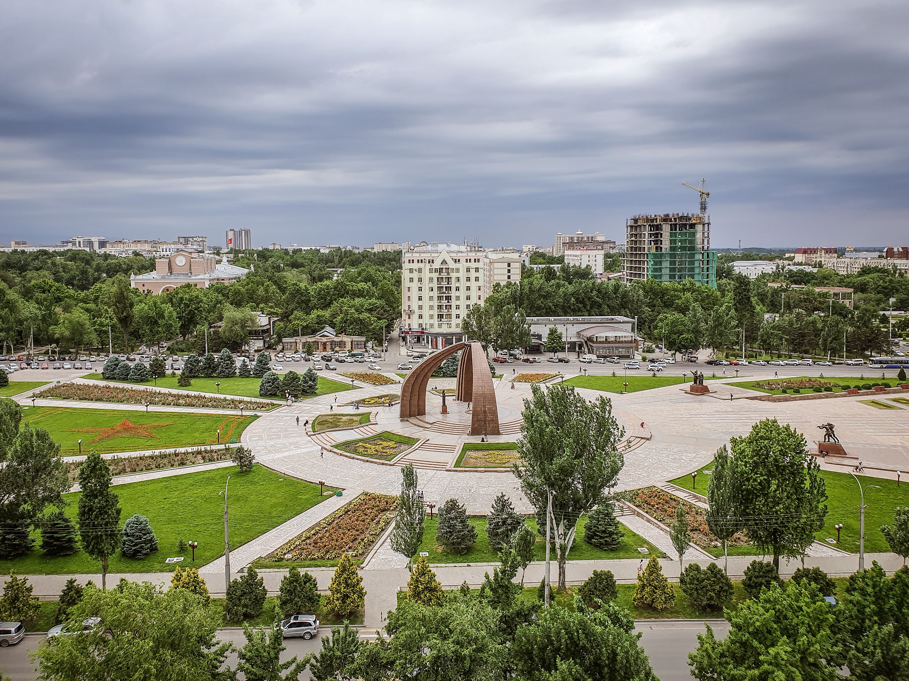

Bishkek · il primo incontro
01 · La capitale
Bishkek
Si comincia dalla capitale, tra piazze monumentali, mercati e il movimento delle strade. Prima di partire verso i grandi spazi, Bishkek è il luogo dove prendere confidenza con il Paese, assaggiare la cucina locale e preparare le tappe successive.